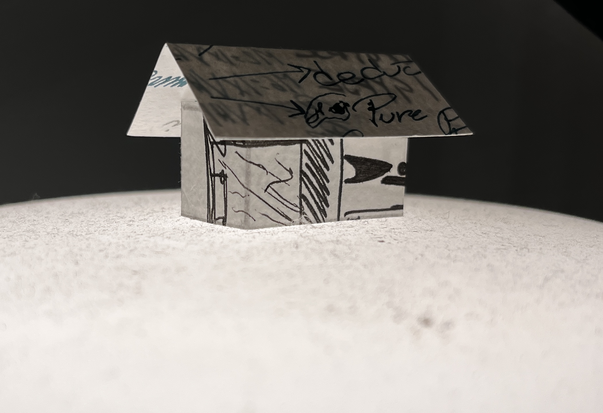

Un projet conçus dans le cadre du cours de conception, la maquette représente une petite construction servant a une zone de lecture et d'évenement exterieur. Traversant une rivière et un champ de graminées le pavillon vient s'intaller en arrière de la bibliothèque du boisée. Un jeux visuel est créé grâce à la toiture de toile tendu. La pluie qui se heurte a celle-ci et à l'environement adjencent est la source d'une immersion audditive.